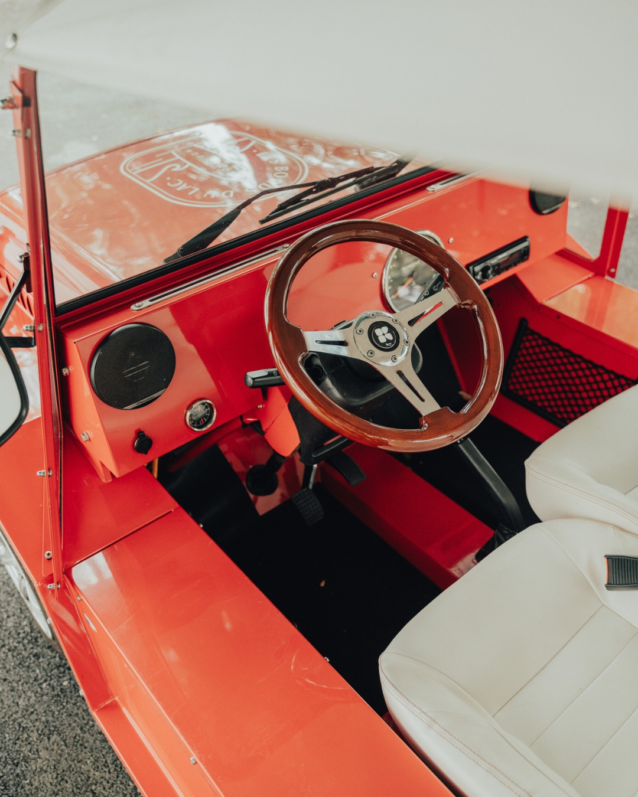
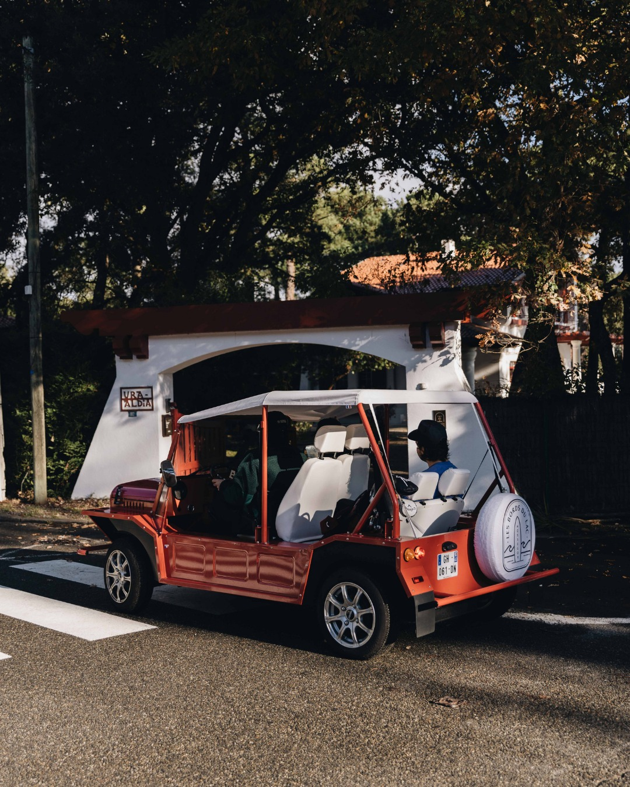
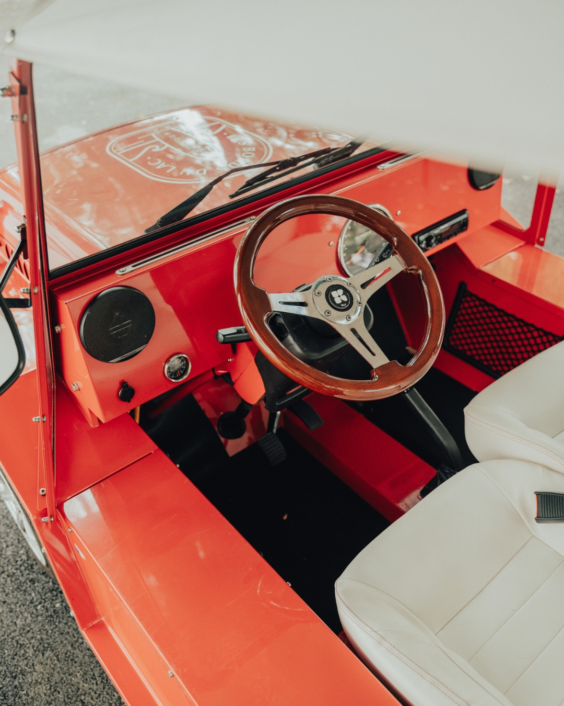
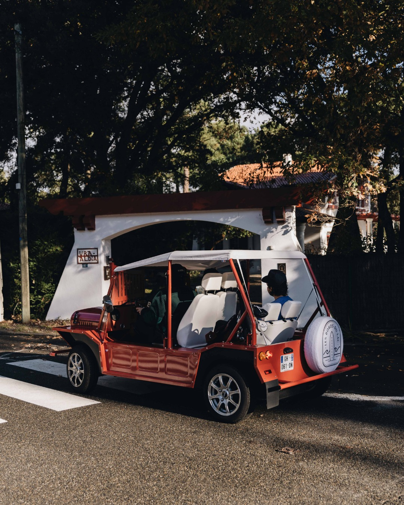

ESVEN
Location de véhicule iconique pour hôtels de prestige, villas privées et événements d’exception.
Une mise à disposition prolongée pour hôtels de luxe, villas d’exception et conciergeries privées — idéale pour la haute saison.
Un service flexible pour les séjours éphémères, avec service de livraison sur mesure.
La Kate devient un vecteur d’image et un outil marketing émotionnel lors de mariages, lancements ou tournages haut de gamme.
 



Mathis CROIZAT
Email : m.croizat@esven.fr
Tél : 07 87 41 00 86